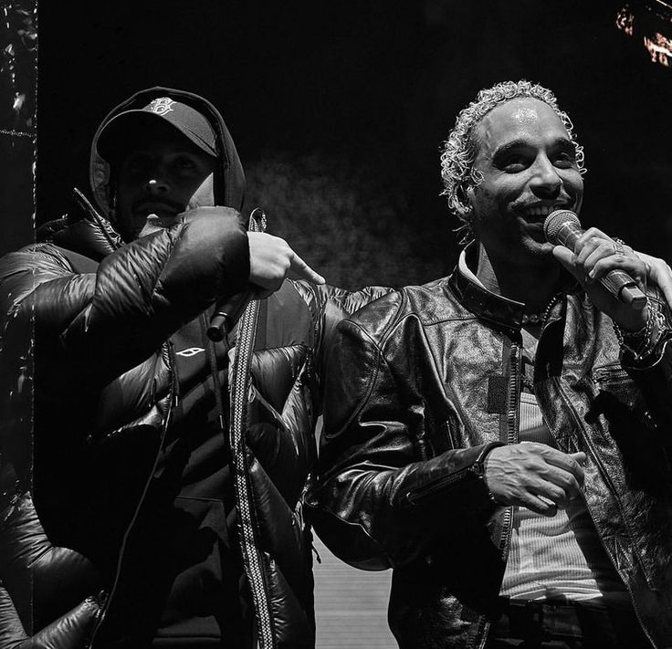

Laylow, between movie theater and music
Laylow isn’t like the others. He started first his career with Sir’Klo in 2013 with who he released a project to make a presentation of themselves.
Few years later, he joined Wit to make another EP in 2015.

After these meetings that helped him gain in recognition, he released his first solo project in
2016 called Mercy and which is also an Ep. After two other successful EP projects, he recorded his first album in 2020 entitled "Trinity".
He created a whole new universe to tell his story. Mixing digital and real worlds, he created a piece of art that had never been done before in French rap. The story tells us about a love story between him and a software that plays the role of a woman.
One year later, he came back with a short film to announce his second album “L’histoire étrange de Monsieur Anderson”. Again, the album isn’t only a series of singles but really a story about the artist himself. This time Mr Anderson represents an alter ego of laylow and teaches us about how laylow feels.
This success was affirmed by the two sold-out Accor Hotel Arena in which he performed in 2022. He really stands as one of the main figures of French rap and especially as a precursor of a new type of art mixing music and 7th Art…